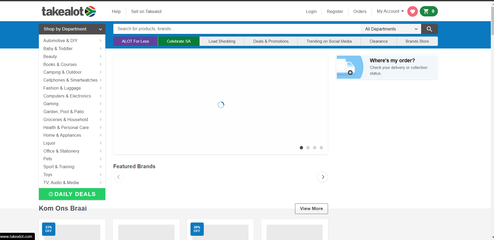

PARC: Contrast
"Bootcamp"
hyperiondev.com
Because opposites attract, and in this case it can be true for elements of design as well. The contrast of the font in yellow and the background in black makes the web page more attractive and unic than the others.
Visual Hierarchy
"Ordering"
takealot.com Visual hierarchy is the order importance of the elements and components in an ascending or descending matter on the page. In this example, this is accomplished using the proportion of the headings, the colors on the fonts and background, the images on the grid, and style. It is providing a focal point; this indicates to visitors where the most essential data is found.
White Space
"Odering"
amazon.comWhite space is the portion of a web page that remains “empty.” It is found between graphics, margins, lines of type, etc. The White space used by this web page is all about the use of hierarchy for information, typography, color, or images. In this example, we see white space between the elements differencing the hierarchy visual of the page for the visitor to read better.